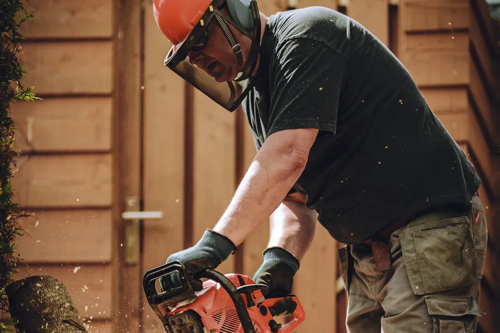

Everything we do on Galveston Island, with an honest description of who actually needs it and what happens if it waits. Each service has its own page covering process, timing and real cost ranges.

A dead, leaning or storm-damaged tree on a barrier island is not a someday problem. Galveston sand holds a root plate the way a dinner plate holds a fence post, so a tree that has started to move keeps moving, and every wet week makes it worse.
Who needs it: Anyone with a tree closer to the house than the tree is tall, an oak thinning from the crown down, a trunk with a vertical seam or fungal conks at the base, or anything the last storm left leaning. Left alone, a failing tree does not fall on a schedule that suits you — it falls in the next 40-mile-an-hour gust, usually onto whatever is most expensive.
Call us today for tree removal in Galveston.
A canopy that has never been thinned catches a Gulf wind like a sail, and the load goes straight down into a shallow island root plate. Selective pruning lets the wind through instead.
Who needs it: Anyone with limbs over a roof, dead wood in the crown, or an oak that has not been touched in five years. Ignore it and you get two problems: shingles worn through by branches that rest on them, and a canopy dense enough to lever the whole tree out of the sand during a named storm. Oaks carry a third risk, since pruning them in the wrong months invites oak wilt.
Call us today for tree trimming & pruning in Galveston.
Palms cannot seal a wound or regrow a crown, so a bad trim is permanent. The hurricane cut sold every spring along this coast makes palms more likely to lose their heads, not less.
Who needs it: Anyone with a skirt of brown fronds, seed pods about to drop on a driveway or pool deck, or a palm nobody has climbed in years. Skipping it invites rats and wasps into the boots, drops heavy fronds where people walk, and lets lethal bronzing go unnoticed — and once that disease kills the central spear, the palm cannot be saved.
Call us today for palm tree trimming in Galveston.
A stump left flush is still a stump. Ground six to twelve inches below grade, the spot becomes ground you can sod, plant, fence or pour on. Island sand grinds faster than mainland clay, which keeps the price down.
Who needs it: Anyone putting in a fence, a slab or a replacement tree, and anyone tired of finding the same stump with the mower. Left in place, a decaying stump within a few feet of a wood-frame house is a termite food source, a trip hazard for guests, and on tallow and hackberry, a source of suckers that keep coming back.
See how stump grinding works →
Call us today for stump grinding in Galveston.
Hurricane season runs June 1 through November 30, and on this island trees lever out of the ground rather than snap. A fallen tree is loaded like a spring, and the order the cuts are made in decides where the weight goes.
Who needs it: Anyone with a tree on a roof, a car, a fence or a driveway, a limb hung up in a canopy, or a still-standing tree with soil heaved behind it. Waiting on any of those is how a repairable roof becomes a rebuilt one, and how homeowners get hurt trying to handle it with a chainsaw and a ladder.
See how storm response works →
Call us today for emergency storm damage in Galveston.
Chinese tallow will take a mowed Galveston lot to a young thicket in three or four growing seasons. The wood is brittle, so a mature stand near a structure is a liability every storm season.
Who needs it: Anyone prepping a parcel for a build or a sale, clearing a fence line or utility easement, or reclaiming a back half that got away. Left alone, small stems you could mow become ten-inch trunks that need removal equipment, and the cost of the job multiplies over a handful of years.
Call us today for lot clearing & brush removal in Galveston.
Describe the tree and what it is doing. We will tell you which service fits, and whether it can wait until after hurricane season or not.
Call (409) 255-0582 for a Free Estimate